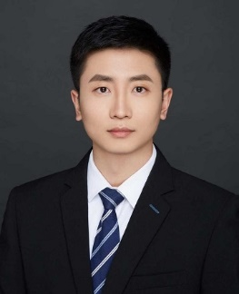

李佳男
李佳男，博士，北京理工大学光电学院长聘副教授（特别研究员）。长期从事光电成像目标探测与识别、光计算与智能感知、计算机视觉等方向研究。以第一作者发表论文16篇，平均影响因子13.4，包括IEEE TPAMI 4篇、ESI高被引1篇，单篇被引超850次2篇；以通讯作者发表论文50余篇，包括IEEE TMI、TNNLS、NeurIPS 、CVPR、ECCV (Oral) 等。论文单篇最高被引900余次，谷歌学术总引4400余次。相关研究成果在“中国天眼”等国家重大科技基础设施中得到重要应用。
主持国家自然科学基金青年基金等项目7项；入选中国科协、北京市科协“青年人才托举工程”，获得中国图象图形学学会优秀博士学位论文、王大珩高校学生光学奖、北京市三好学生、ImageNet国际大规模视觉识别挑战赛团队冠军等荣誉。
指导研究生获得ICCV 2021“反无人机跟踪”挑战赛国际冠军及最佳论文奖、ECCV 2022“点云目标鲁棒识别”挑战赛国际季军、第四届“空天杯”创新创意大赛全国二等奖、中国高等教育博览会“校企合作 双百计划”典型案例、第九届高效科技创新成果展示推介会“一等奖”等。
